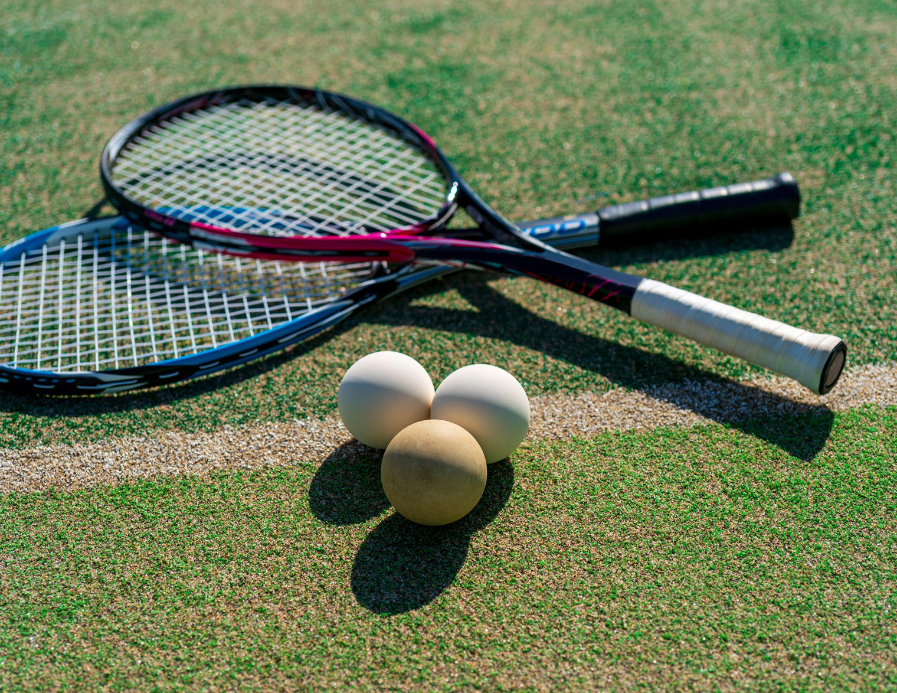
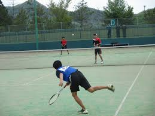

Atsuki yamamori
Soft Tennis is a ball game that originated in modern tennis and developed in the very early stages, in which players play 2-on-2 (4 players) or 1-on-1 (2 players) against each other with a hollow, soft rubber ball and a racket over a net. The game originated in Japan and is played mainly in East Asia, but in recent years tournaments are also regularly held in Eastern Europe.
I discovered soft tennis when I was in junior high school. The reason for my encounter was a club activity at school. I had always liked tennis, but I did not know about soft tennis. I started playing soft tennis as a club activity, and I fell in love with the sport and was selected as a regular member of the school team.
I like both tennis and soft tennis, and although they are the same, the two sports are quite different. First, the speed of the ball hit is different. This is caused by the difference in the balls, but the tennis ball is faster and bounces better. Soft tennis is not as fast and does not bounce as much. These differences change the strategy for scoring points and the way the ball is hit. I prefer soft tennis because I can hit the ball as hard as I can.